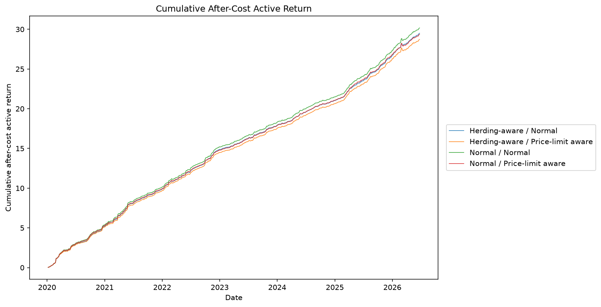
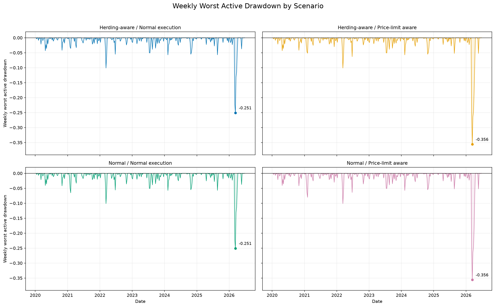
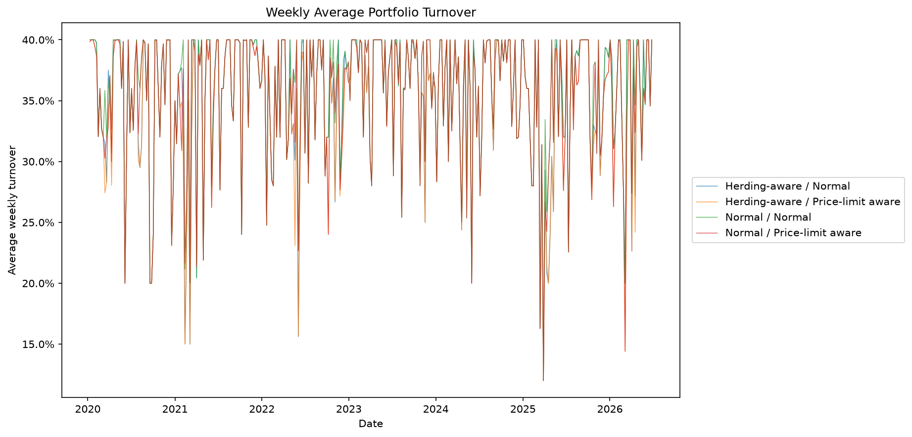
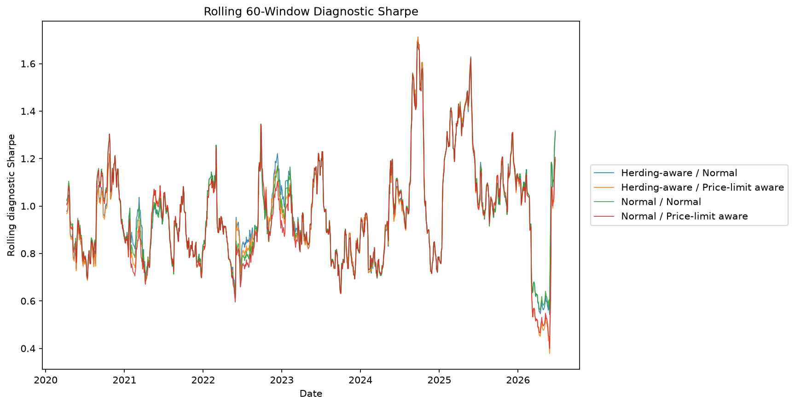

What This Dashboard Provides
This dashboard summarizes the model's latest processed VN30 ranking, the research portfolio selected from that ranking, the backtest evidence, and the limitations of the current framework.
| Provides | Does not provide |
|---|---|
| Latest processed VN30 stock ranking | Live broker-ready trading orders |
| Long-only research portfolio weights | Guaranteed return or risk-free recommendation |
| Backtest and robustness evidence | Point-in-time VN30 membership guarantee |
| Research signal based on local processed data | Personalized investment advice |
Latest VN30 Stock Ranking
Stocks are ordered by the latest processed model score. Higher-ranked names are the stocks the model preferred on that signal date.
| Rank | Ticker | Signal date | Model | Model score | Portfolio weight | Issuer group | Optimization mode | Realized forward return |
|---|---|---|---|---|---|---|---|---|
| 1 | SSB | 2026-06-23 | gradient_boosting | 2.17% | 20.00% | SeABank | herding_aware | 6.69% |
| 2 | VHM | 2026-06-23 | gradient_boosting | 1.64% | 20.00% | Vingroup | herding_aware | 0.60% |
| 3 | VIC | 2026-06-23 | gradient_boosting | 1.64% | 20.00% | Vingroup | herding_aware | -4.55% |
| 4 | VCB | 2026-06-23 | gradient_boosting | 0.47% | 20.00% | Vietcombank | herding_aware | 1.04% |
| 5 | SAB | 2026-06-23 | gradient_boosting | 0.29% | 20.00% | Sabeco | herding_aware | 1.03% |
| 6 | GVR | 2026-06-23 | gradient_boosting | -0.07% | 0.00% | NaN | NaN | -2.80% |
| 7 | MWG | 2026-06-23 | gradient_boosting | -0.68% | 0.00% | NaN | NaN | 2.37% |
| 8 | BID | 2026-06-23 | gradient_boosting | -0.73% | 0.00% | NaN | NaN | -1.09% |
| 9 | STB | 2026-06-23 | gradient_boosting | -0.76% | 0.00% | NaN | NaN | 2.55% |
| 10 | VRE | 2026-06-23 | gradient_boosting | -0.77% | 0.00% | NaN | NaN | -1.49% |
| 11 | VJC | 2026-06-23 | gradient_boosting | -0.93% | 0.00% | NaN | NaN | 1.02% |
| 12 | ACB | 2026-06-23 | gradient_boosting | -0.95% | 0.00% | NaN | NaN | 0.91% |
| 13 | LPB | 2026-06-23 | gradient_boosting | -1.00% | 0.00% | NaN | NaN | 1.29% |
| 14 | SSI | 2026-06-23 | gradient_boosting | -1.15% | 0.00% | NaN | NaN | -0.87% |
| 15 | TCB | 2026-06-23 | gradient_boosting | -1.25% | 0.00% | NaN | NaN | 4.20% |
Latest Optimized Portfolio Weights
Latest selected research portfolio on 2026-06-23. The preferred display uses herding-aware optimization when available.
| Ticker | Portfolio weight | Issuer group | Predicted return | Realized forward return | Optimization mode | Portfolio turnover | High-herding day |
|---|---|---|---|---|---|---|---|
| SAB | 20.00% | Sabeco | 0.29% | 1.03% | herding_aware | 40.00% | False |
| SSB | 20.00% | SeABank | 2.17% | 6.69% | herding_aware | 40.00% | False |
| VCB | 20.00% | Vietcombank | 0.47% | 1.04% | herding_aware | 40.00% | False |
| VHM | 20.00% | Vingroup | 1.64% | 0.60% | herding_aware | 40.00% | False |
| VIC | 20.00% | Vingroup | 1.64% | -4.55% | herding_aware | 40.00% | False |
Forecast Horizon Results
Compares whether the model works better with 1-day, 5-day, or 10-day prediction targets.
| Forecast horizon days | Target label | Evaluated dates | Feature count | Average Rank IC | Average top-5 hit rate | Average top-5 realized return | Average selected stocks | Average after-cost return | Return volatility | Diagnostic Sharpe | Max active drawdown | Average turnover | Maximum turnover | Final cumulative after-cost active return |
|---|---|---|---|---|---|---|---|---|---|---|---|---|---|---|
| 1 | forward_relative_return_1d | 1,613.00 | 51 | -0.003844 | 44.79% | -0.01% | 5 | -0.09% | 0.66% | -0.140805 | -152.56% | 38.96% | 40.00% | -1.508238 |
| 5 | forward_relative_return_5d | 1,609.00 | 51 | 0.338033 | 67.61% | 2.36% | 5 | 1.82% | 2.17% | 0.840073 | -35.59% | 35.46% | 40.00% | 29.360326 |
| 10 | forward_relative_return_10d | 1,604.00 | 51 | 0.546504 | 80.11% | 5.27% | 5 | 4.86% | 3.47% | 1.398924 | -21.95% | 31.74% | 40.00% | 77.915433 |
Feature Ablation Results
Compares the full feature set with versions where feature groups are removed.
| Feature set tested | Evaluated dates | Feature count | Average Rank IC | Average top-5 hit rate | Average top-5 realized return | Average selected stocks | Average after-cost return | Return volatility | Diagnostic Sharpe | Max active drawdown | Average turnover | Maximum turnover | Final cumulative after-cost active return |
|---|---|---|---|---|---|---|---|---|---|---|---|---|---|
| all_features | 1,609.00 | 51 | 0.338033 | 67.61% | 2.36% | 5 | 1.82% | 2.17% | 0.840073 | -35.59% | 35.46% | 40.00% | 29.360326 |
| without_herding | 1,609.00 | 41 | 0.337983 | 67.63% | 2.37% | 5 | 1.82% | 2.20% | 0.827557 | -35.59% | 35.60% | 40.00% | 29.281588 |
| without_price_limit | 1,609.00 | 36 | 0.316762 | 66.61% | 2.23% | 5 | 1.69% | 2.16% | 0.784717 | -35.93% | 36.15% | 40.00% | 27.268516 |
| without_risk | 1,609.00 | 49 | 0.314453 | 65.73% | 2.18% | 5 | 1.63% | 2.18% | 0.749285 | -36.36% | 36.51% | 40.00% | 26.30143 |
| without_volume_liquidity | 1,609.00 | 40 | 0.307164 | 65.51% | 2.15% | 5 | 1.64% | 2.21% | 0.742006 | -32.26% | 36.17% | 40.00% | 26.341446 |
Figures
These are the original research figures from reports/figures. The annotations explain how to read each graph. If a graph is visually crowded, the next step is to improve the original visualization script rather than creating duplicate graphs.

What this means: This is the main performance path. It shows whether the strategy grows after estimated trading costs.
How to read it: Focus on the overall direction and the gap between lines. If the lines rise steadily, the backtest is strong. If one line is consistently above another, that version performs better.
Current limitation: If the lines are very close, the graph is saying the different execution or optimization modes produce similar outcomes. We should later adjust this figure to make the comparison easier.

What this means: This shows how much performance falls from a previous high point.
How to read it: The closer the line stays to zero, the less painful the strategy is. Deep downward spikes show periods when the strategy gave back previous gains.
Current limitation: This graph is currently dense. The most useful part is the deepest drop and whether the strategy recovers quickly.

What this means: This shows how much the portfolio changes between rebalancing dates.
How to read it: Higher turnover means more buying and selling. More trading usually means more costs and lower practical realism.
Current limitation: If the lines are too close, the graph is not doing enough visual work. We should later change it into a clearer summary or rescale it.

What this means: This shows whether the strategy stays useful across time instead of only working in one lucky period.
How to read it: Higher values mean better return compared with volatility in that rolling window. Long weak stretches are more concerning than short dips.
Current limitation: Rolling metrics can be noisy, so the broad trend matters more than each small movement.

What this means: This compares which prediction horizon gives the best risk-adjusted backtest result.
How to read it: The strongest horizon is the one with the highest value. In this project, the longer horizon is currently stronger than the 1-day horizon.
Current limitation: This does not mean the best horizon will always stay best in future data.
What this means: This checks whether the model ranks stocks in the right order for each forecast horizon.
How to read it: Higher Rank IC means the model is better at putting future winners above future losers.
Current limitation: A high ranking score supports the signal, but it still needs portfolio and cost testing.

What this means: This checks whether removing feature groups weakens performance.
How to read it: If the full feature set performs best, the removed feature groups likely contain useful information.
Current limitation: Small differences should not be over-interpreted. The key question is whether the ranking changes meaningfully.

What this means: This shows which input variables the Gradient Boosting model uses most.
How to read it: Features near the top have more influence on the model's predictions.
Current limitation: Feature importance explains model usage, not guaranteed economic causality.
Metric Glossary: What The Measured Data Means
This section explains the table columns and graph concepts in plain language. Read this if Rank IC, Sharpe, drawdown, turnover, or model score is unclear.
| Metric / concept | Meaning | How to interpret it |
|---|---|---|
| Rank | The position of a stock in the latest model ranking. Rank 1 means the model gives that stock the strongest score on the latest signal date. | Lower rank number is better. |
| Ticker | The stock code, such as FPT, VCB, VIC, or HPG. | Used to identify each VN30 stock. |
| Signal date | The date when the model ranking or portfolio signal was generated from the processed dataset. | This is not automatically today's live trading date. |
| Model score / predicted return | The model's estimated relative-return signal for a stock. It is best understood as a score for ranking stocks, not as a guaranteed future return. | Higher is better. |
| Realized forward return | The return that actually happened after the signal date over the target horizon. This is used to evaluate the model after the fact. | This is not known when the model makes the prediction. |
| Portfolio weight | The percentage of the research portfolio allocated to a stock. For example, 20% means one-fifth of the portfolio goes into that stock. | Higher means the optimizer selected more of that stock. |
| Issuer group | A grouping used to identify related companies, such as Vingroup names. This helps detect concentration risk. | Useful for checking whether the portfolio is too concentrated. |
| Optimization mode | The portfolio construction rule used after model ranking. For example, herding-aware mode tries to account for crowding or related-stock behavior. | Different modes test different portfolio assumptions. |
| Forecast horizon | How far ahead the model tries to predict. In this project, the tested horizons are 1 day, 5 days, and 10 days. | The best horizon is the one with stronger ranking and backtest evidence. |
| Target label | The exact future-return variable the model is trained to predict, such as forward_relative_return_5d or forward_relative_return_10d. | It defines the prediction task. |
| Evaluated dates | The number of dates included in the backtest or evaluation. | More evaluated dates usually means more evidence. |
| Feature count | The number of input variables used by the model. | More features is not always better; ablation tests check whether features add value. |
| Rank IC | Rank Information Coefficient. It measures whether the model ranked future winners above future losers. It focuses on ordering, not exact return prediction. | Higher is better. Near zero means weak ranking ability. Negative means the ranking may be wrong-way. |
| Average Rank IC | The average Rank IC across all evaluated dates. | Higher means the ranking signal was more consistently useful. |
| Top-5 hit rate | How often the model's top-ranked stocks ended up being among the stronger realized performers. | Higher is better. |
| Average top-5 realized return | The average future return of the stocks selected near the top of the ranking. | Higher means the model's preferred stocks performed better afterward. |
| Average selected stocks | The average number of stocks selected into the portfolio. | This shows how concentrated or diversified the strategy is. |
| Average after-cost return | The average return after estimated commission, slippage, and liquidity costs. | Higher is better. This matters more than before-cost return. |
| Return volatility | How much the strategy's returns fluctuate. Higher volatility means returns are less stable. | Lower is usually more comfortable, but it must be compared with return. |
| Diagnostic Sharpe | A simple risk-adjusted performance measure. It compares average return with return volatility. | Higher is better. Negative means poor risk-adjusted performance. |
| Max active drawdown | The worst fall from a previous peak in the active-return path. | Closer to zero is better. Large negative values mean painful losing periods. |
| Average turnover | The average amount of portfolio change between rebalancing dates. | Lower is easier to trade. Very high turnover creates more trading costs. |
| Maximum turnover | The largest single-period portfolio change in the backtest. | High maximum turnover can signal unrealistic trading pressure. |
| Final cumulative after-cost active return | The final compounded value of the strategy's active return after estimated trading costs. | Higher is better, but it must be judged together with drawdown and turnover. |
| Feature ablation | A test where one group of features is removed to see whether model performance gets worse. | If removing a feature group hurts performance, that group likely adds useful information. |
| Full feature set | The model version that uses all available feature groups. | It should ideally outperform reduced versions. |
| Without herding | A feature-ablation version where herding-related features are removed. | If performance falls, herding features are useful. |
| Without price limit | A feature-ablation version where Vietnam price-limit features are removed. | If performance falls, price-limit features are useful. |
| Without risk | A feature-ablation version where risk-related features are removed. | If performance falls, risk features are useful. |
| Without volume/liquidity | A feature-ablation version where volume and liquidity features are removed. | If performance falls, liquidity features are useful. |
| Active return | The strategy's return compared with the benchmark or active-return baseline used in the project. | Positive active return means the strategy beats the baseline. |
| After-cost active return | Active return after estimated trading costs. | This is more realistic than before-cost active return. |
| Drawdown | The fall from a previous high point. | Large drawdowns mean the strategy can lose a lot before recovering. |
| Turnover | How much the portfolio changes from one rebalance to the next. | More turnover usually means more trading cost and lower live-trading realism. |
What The Dashboard Means
The dashboard means that the project can generate a latest processed VN30 stock ranking, convert that ranking into a constrained long-only research portfolio, and evaluate whether the signal was historically useful.
It does not mean the system is trade-ready. The current output is a research signal, not a broker-ready order list, not a guaranteed return forecast, and not personalized investment advice.
Report Links
Open the source reports for methodology, audit notes, and detailed results.